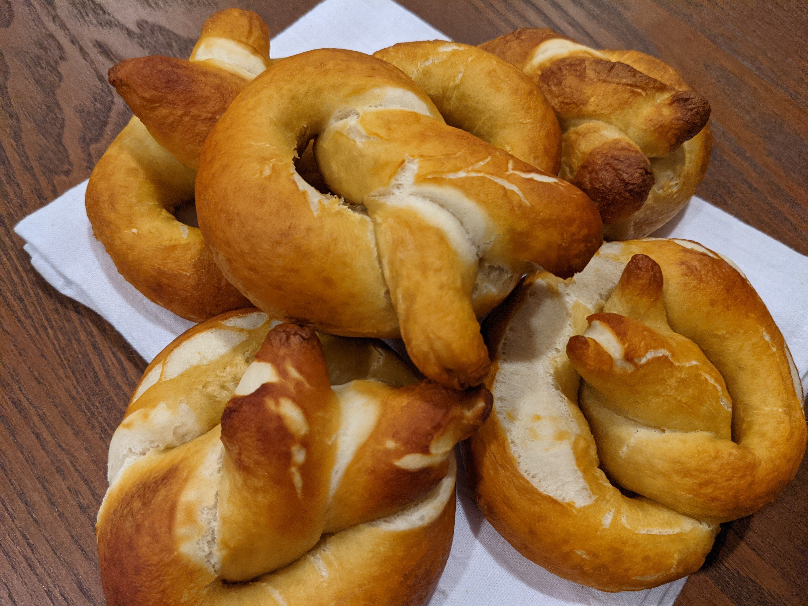

Pretzels
Ingredients
Dough
- 1 1/2 cups warm water
- 1 Tbs sugar
- 2 tsp salt
- 1 package active dry yeast
- 22 oz all-purpose flour (4 1/2 cups)
- 2 oz unsalted butter, melted (4 Tbs)
Boiling
- 10 cups water
- 2/3 cups baking soda
Instructions
- Combine the water, sugar, salt, and yeast into the bowl of a stand mixer.
Wait 5 minutes
Until frothy
- Add flour and melted butter to the bowl.
- Mix on low until well combined.
- Mix on medium and mix until dough is elastic and supple.
- Remove the dough from the bowl, spray the bowl with pam (or rub with vegetable oil) and place your dough back in. Cover with a towel.
Let rise for 1 hour
Until doubled in size
-
Preheat the oven to 450 F.
-
Line two baking sheets with parchment paper.
-
Bring the water and baking soda to a boil.
-
Meanwhile, divide the dough into 8 pieces and cover with a towel.
Use a scale to help guarantee all of your pretzels will be the same size.
-
Roll each dough ball into a 24-inch rope. One way to do this would be to first roll the ball out into a ~8-inch rectangle, roll tightly into a tube, and then roll that out into a rope. Doing the initial tube roll can improve the resulting texture. Alternatively, just roll it directly into a rope.
-
To turn the rope into a pretzel, first lay out the pretzel in a U shape. Then cross the two ends one or twice, depending on what style you’re going for. Then bring the intersection down to the bottom of the U and gently press.
-
Place pretzels, two at a time, into the boiling water. Let boil for 30 seconds, remove using a spider or spatula, and then place on a baking sheet. Each baking sheet should hold 4 pretzels.
You might see the pretzels unfold a bit in the boiling water. It’ll be ok. They’ll stick back together when they bake.
-
Bake for 13-16 minutes, turning half-way if you can be bothered.
-
After taking them out of the oven, let them sit for at least 5 minutes on a cooling rack before eating. Enjoy!